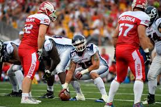

Regresar
Futbol Americano
El fútbol americano (en inglés American Football o simplemente Football en Estados Unidos) es un deporte nacido hace más de cien años en EE. UU. que se expandió a toda Norteamérica, derivado del rugby inglés. Es uno de los deportes de contacto más competitivos de EE. UU., que se practica actualmente en más de setenta países, aunque solo lo viven de manera intensa y apasionada en Estados Unidos, Inglaterra, México y Canadá, en este último país jugándose con una variación internacional en algunas de las reglas establecidas para el fútbol americano2, mientras que México mantiene las reglas estadounidenses y su variación de fútbol bandera o «tocho».
La mayor manifestación competitiva y mediática de este deporte se da en la National Football League (NFL), la liga de fútbol americano profesional de Estados Unidos. El fútbol americano universitario, que se practica a nivel aficionado en todo el país, también goza de gran popularidad. Otras ligas norteamericanas como la Liga de Fútbol Americano Profesional de México (LFA) y la Canadian Football League (CFL) son vistas localmente.
Este deporte es confundido habitualmente con el rugby en países sin tradición en alguno de dichos deportes, mas son diferentes. Además se suele confundir con el «fútbol clásico» de origen europeo, también conocido como «balompié». México es el único país hispanohablante que nombra «fútbol» tanto al fútbol europeo como al fútbol americano.[cita requerida]
Es un deporte bastante intenso y complejo en el que se requiere un gran estado físico. En los últimos años hay una gran controversia por las lesiones cerebrales que sufren algunos jugadores y más de 100 000 jugadores retirados que han interpuesto demandas contra la NFL, argumentando haber ignorado y no haber advertido a los jugadores de los peligros de conmoción, traumas y otras lesiones cerebrales, debido a esto las reglas son constantemente modificadas para salvaguardar la integridad de los jugadores sin afectar la emoción del juego.
